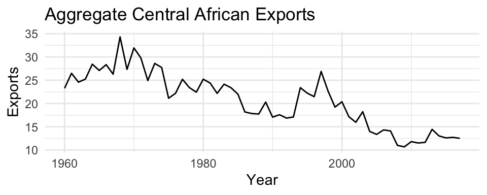
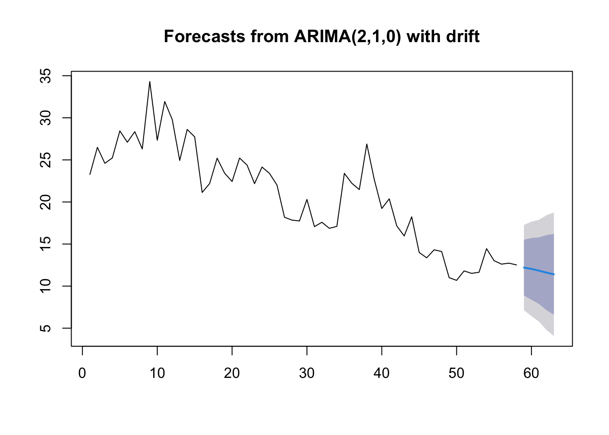

Set 4 ARIMA Models
4.1 AR Models
An autoregressive model of order p, or AR(p), is defined as
\[ x_t = \phi_0 + \phi_1 x_{t-1} + \phi_2 x_{t-2} + \dots + \phi_p x_{t-p} + w_t \]
where we assume
\(w_t\) is white noise. That is, \(w_t \sim N(0,\sigma^2_w)\).
\(\phi_p \neq 0\) for an order-p process
4.1.1 AR(1) Model
Let’s start by figuring out some properties of the simplest AR model, the AR(1) model:
\[ x_t = \phi_0 + \phi_1 x_{t-1} + w_t \]
We start by assuming that \(x_t\) is a stationary time series. Under this assumption, we can show:
\[\begin{align} E(x_t) &= \frac{\phi_0}{1-\phi_1} \\ Var(x_t) &= \frac{\sigma^2_w}{1-\phi_1^2} \\ \rho(h) &= \phi_1^h \end{align}\]
For this to work, \(|\phi_1| < 1\). Now let’s simulate some data from an AR1 model and compare theoretical and observed quantities.
set.seed(1)
phi_1 = 0.5
sigsq_w = 1
x = arima.sim(n = 10000, model = list(ar=c(phi_1)), sd = sigsq_w)| quantity | theory | empirical |
|---|---|---|
| mean | 0.000000 | -0.0142169 |
| variance | 1.333333 | 1.3889404 |
| ACF, k=2 | 0.250000 | 0.2611053 |
4.1.2 AR Stationarity
In the case of the AR(1) model, it was apparent that the condition we needed to ensure a stationary model was the condition that \(|\phi_1| < 1\). For the general AR(p) model, though, the condition is more complicated. Before defining the condition, we define the backshift operator, \(\mathbf{B}\):
\[\mathbf{B}x_t = x_{t-1}\].
Using this operator, we can re-write the AR(p) model as,
\[ x_t = \phi_1 x_{t-1} + \phi_2 x_{t-2} + \dots + \phi_p x_{t-p} + w_t \\ \Downarrow \\ \begin{align} x_t - \phi_1 x_{t-1} - \phi_2 x_{t-2} - \dots - \phi_p x_{t-p} &= w_t \\ (1 - \phi_1 \mathbf{B} - \phi_2 \mathbf{B}^2 - \dots - \phi_p \mathbf{B}^p) x_t &= w_t \\ \phi_p (\mathbf{B}^p) x_t &= w_t \\ \end{align} \]
We will refer to \(\phi_p (\mathbf{B}^p)\) as the characteristic equation. To be stationary, all roots of the characteristic equation must exceed 1 in absolute value. To make this more concrete, let’s go through some examples.
- \(x_t = 0.5 x_{t-1} + w_t\)
- \(x_t = -0.2 x_{t-1} + 0.4 x_{t-2} + w_t\)
- \(x_t = x_{t-1} + w_t\)
4.2 MA Models
A moving average model of order q, or MA(q), is defined as
\[ x_t = \theta_0 + w_t + \theta_1 w_{t-1} + \theta_2 w_{t-2} + \dots + \theta_q w_{t-q} \] where \(w_t\) is white noise
Each of the \(x_t\) is a sum of the most recent error terms
Thus, all MA processes are stationary because they are finite sums of stationary WN processes.

4.2.1 MA(1) Model
Let’s start by figuring out some properties of the simplest MA model, the MA(1) model:
\[ x_t = \theta_0 + \theta_1 w_{t-1} + w_t \]
We start by assuming that \(x_t\) is a stationary time series. Under this assumption, we can show:
\[\begin{align} E(x_t) &= \theta_0 \\ Var(x_t) &= \sigma^2_w(1+\theta_1^2) \\ \rho(h) &= \frac{\theta_1}{1+\theta_1^2} \text{ for } h=1 \text{ and 0 otherwise. } \end{align}\]
Now let’s simulate some data from an MA1 model and compare theoretical and observed quantities.
set.seed(1)
theta_1 = 0.5
sigsq_w = 1
z = arima.sim(n = 10000, model = list(ma=c(theta_1)), sd = sigsq_w)| quantity | theory | empirical |
|---|---|---|
| mean | 0.00 | -0.0098233 |
| variance | 1.25 | 1.2937915 |
| ACF, k=2 | 0.40 | 0.4124200 |
4.3 ARMA Models
An autoregressive moving average, or ARMA(p,q), model is written as
\[ x_t = \phi_1 x_{t-1} + \dots + \phi_p x_{t-p} + w_t + \theta_1 w_{t-1} + \dots + \theta_q w_{t-q} \]

4.4 ARIMA Models
Our data is not always stationary. If the data do not appear stationary, differencing can help. This leads to the class of autoregressive integrated moving average (ARIMA) models. ARIMA models are indexed with orders (p,d,q) where d indicates the order of differencing.
\(\{x_t\}\) follows an ARIMA(p,d,q) process if \((1-\mathbf{B})^d x_t\) is an ARMA(p,q) process.
For example, if we look at Japan exports over the time period from 1960 to 2016, we see a clear evolution in the mean of the time series, indicating that the time series is not stationary.

As we saw in week one, if we instead look at the year over year changes in exports, we see something that more closely resembles a stationary time series.

4.4.1 Model Selection/ Fitting
The general sequence of steps involved in fitting an ARIMA model to a given time series are:
- Evaluate whether the time series is stationary
- If not, make it stationary - select the differencing level (d)
- Select the AR level (p) and the MA level (q) that optimize the AIC
Steps two and three are automated with the function forecast::auto.arima function. For instance,
## Series: je$Exports
## ARIMA(0,1,0)
##
## sigma^2 = 1.628: log likelihood = -93.1
## AIC=188.21 AICc=188.28 BIC=190.24
##
## Training set error measures:
## ME RMSE MAE MPE MAPE MASE
## Training set 0.0948585 1.264655 0.883942 0.2186117 7.269751 0.9826653
## ACF1
## Training set -0.043171394.4.2 Model Checking
4.4.2.1 Check the residuals
Residuals = difference between the expected (fitted) value of \(x_t\) and the data
There is no observation error in an ARMA model. The expected value is the \(x_t\) expected from data up to \(t-1\).
For example, the residual for an AR(2) model is \(y_t - \hat{x}_t\).
\(x_t = \phi_1 x_{t-1} + \phi_2 x_{t-2} + w_t\)
\(\hat{x}_t = \phi_1 x_{t-1} + \phi_2 x_{t-2}\)
4.4.2.2 residuals() function in R
The residuals() function will return the residuals for fitted models.
## Time Series:
## Start = 1
## End = 57
## Frequency = 1
## [1] 0.01072294 -1.44501952 0.15303390 -0.39309669 0.45625211 1.02356255
## [7] 0.06053730 -0.92437932 0.45807416 0.44426518 -0.19594755 0.86880508
## [13] -1.08192227 -0.52480724 3.41625812 -0.76990990 0.72818035 -0.44252813
## [19] -1.89419993 0.42955074 2.03742971 0.99396401 -0.20034080 -0.62338421
## [25] 1.09590411 -0.50007152 -2.98081554 -0.97493052 -0.36290393 0.53728879
## [31] 0.10797014 -0.43368768 -0.09399316 -0.61422391 -0.07420507 -0.03185334
## [37] 0.50727239 1.06978245 -0.02437143 -0.57272023 0.67272500 -0.39538586
## [43] 0.78912188 0.62107244 1.33273884 1.04040881 1.86046117 1.62041428
## [49] -0.06927885 -4.90312357 2.51584283 -0.11176077 -0.38024365 1.37064557
## [55] 1.62490343 0.04862657 -1.46977556To check the fit of our model, we want to check that the residuals are white noise.
4.4.3 Forecasting
The basic idea of forecasting with an ARIMA model is to estimate the parameters and forecast forward.
For example, let’s say we want to forecast with a ARIMA(2,1,0) model with drift: \[z_t = \mu + \beta_1 z_{t-1} + \beta_2 z_{t-2} + e_t\] where \(z_t = x_t - x_{t-1}\), the first difference.
Arima() would write this model:
\[(z_t-m) = \beta_1 (z_{t-1}-m) + \beta_2 (z_{t-2}-m) + e_t\]
The relationship between \(\mu\) and \(m\) is \(\mu = m(1 - \beta_1 - \beta_2)\).
Let’s estimate the \(\beta\)’s for this model from Japan export.
## ar1 ar2 drift
## -0.05580519 -0.18850080 0.10736838## drift
## 0.1335991So we can forecast with this model:
\[z_t = 0.1335991 -0.05580519 z_{t-1} - 0.18850080 z_{t-2} + e_t\]
Or use the forecast function.
